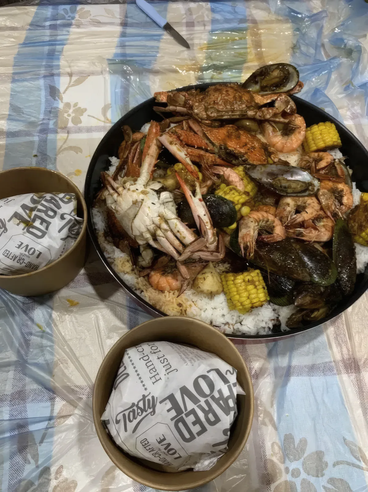
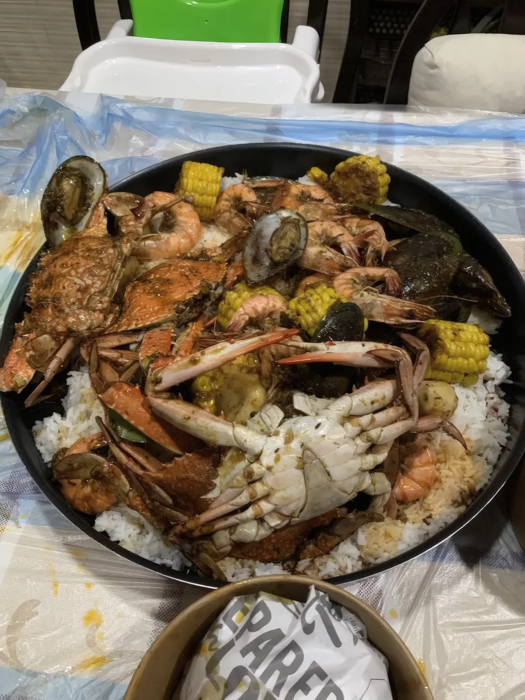
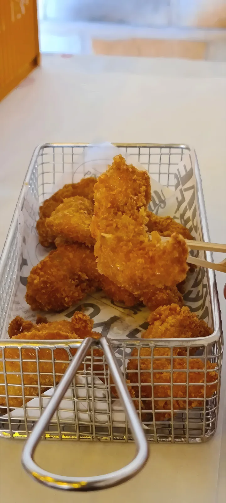
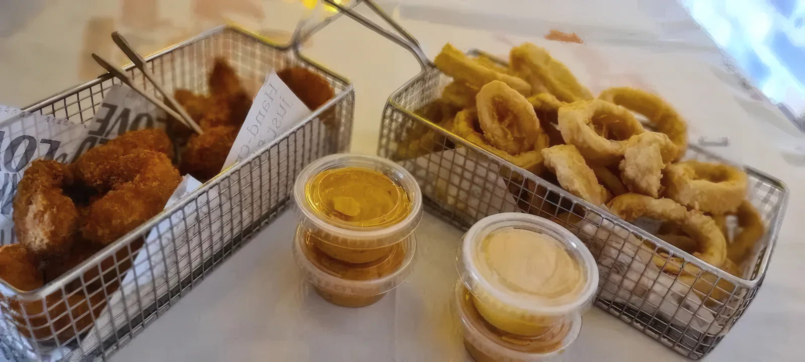
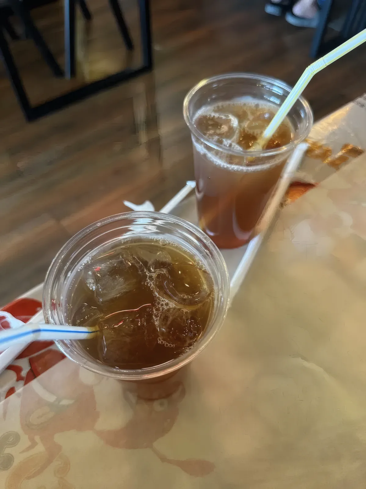
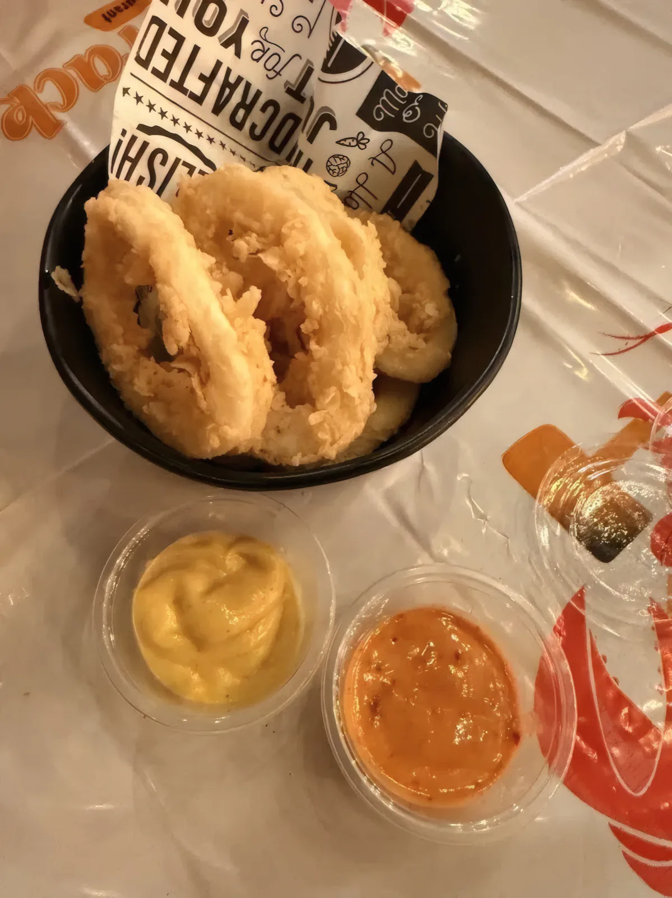
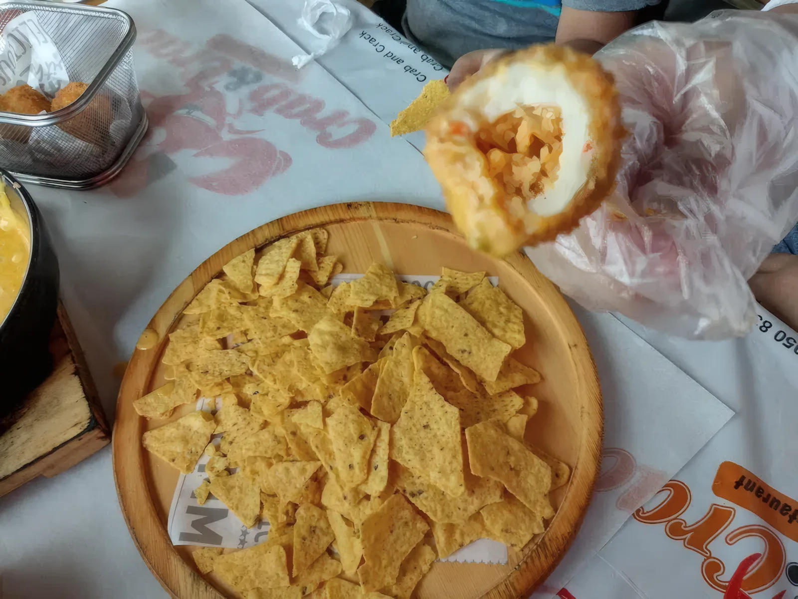

المنيو

اللي يطلع من مطبخنا، بصور من طاولاتنا. الأسعار مو موجودة أونلاين للحين، فارسل لنا ونرسل لك منيو اليوم.
01
سيفود بويل
هذا اللي Crab & Crack قايم عليه. قبقب وربيان وبلح البحر يطبخون مع الذرة والبطاطا بصلصتنا المتبّلة، وبعدين ينكبّون على ورق الطاولة أو يجون في القدر، مع كومة رز أبيض.
- قبقب، ربيان، بلح البحر
- ذرة وبطاطا
- رز أبيض على الجنب
- القفازات على الطاولة، والأكل بالإيد



03
المشويات
إذا تبيه بدون صلصة.
- ربيان مشوي مع ليمون وصوص
- بلح البحر بالفرن في نص الصدفة
- لوبستر مشقوق ومشوي


04
المقليات
تجي ساخنة في السلة الحديد على ورقنا المطبوع، مع الصوصات.
- حلقات كاليماري
- قطع مقرمشة بالبقسماط في السلة



05
شوربة وأطباق جانبية
شي تبدأ فيه، وشي بارد مع البهارات.
- شوربة بحرية
- ناتشوز بالجبن الذايب
- آيس تي




اتصلواطلب
السفري على بعد مكالمة. البويل يجيك مسكّر في الكيس. اتصل أو ارسل طلبك على واتساب، واستلمه من شارع الاتحاد.
050 837 9114